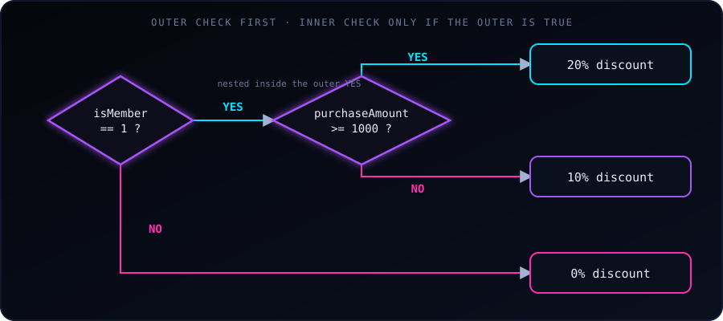

if: the inner check runs only when the outer condition is trueA nested if statement in C is simply an if statement placed inside another if statement. It lets you test conditions that depend on one another: the inner condition is evaluated only if the outer condition is true.
Example 1: E-commerce discount eligibility
Imagine an online store running a promotion:
- Outer condition: is the customer a premium member?
- Inner condition: only if they are, check the purchase amount. Over $1,000 earns a 20% discount; otherwise 10%.
- Non-members get no discount at all.
#include <stdio.h>
int main() {
int isMember = 1; // 1 for yes, 0 for no
double purchaseAmount = 1250.00;
// Outer if: is the user a premium member?
if (isMember == 1) {
printf("Membership verified.\n");
// Inner (nested) if: the order total decides the discount
if (purchaseAmount >= 1000.0) {
printf("Success: You qualify for a 20%% VIP discount!\n");
} else {
printf("Success: You qualify for a 10%% Standard Member discount.\n");
}
} else {
// Runs if the outer condition (isMember == 1) is false
printf("Standard account: No discount available for non-members.\n");
}
return 0;
}Output:
Membership verified.
Success: You qualify for a 20% VIP discount!Note %% in printf: a single % starts a format specifier, so a literal percent sign must be written twice.
The flowchart at the top of this post shows the same logic. If isMember were 0, the computer would skip the inner purchaseAmount check entirely and jump straight to the outer else.
Example 2: ATM withdrawal
Here is another common scenario:
- Outer condition: did the user enter the correct PIN?
- Inner condition: only if so, does the account have enough balance for the withdrawal?
#include <stdio.h>
int main() {
int enteredPin = 1234;
int correctPin = 1234;
double accountBalance = 5000.00;
double withdrawalAmount = 6000.00;
// Outer if: security check for the PIN
if (enteredPin == correctPin) {
printf("PIN verified successfully.\n");
// Inner (nested) if: financial check for sufficient funds
if (withdrawalAmount <= accountBalance) {
printf("Transaction approved. Please collect your cash.\n");
} else {
printf("Transaction denied: Insufficient funds in your account.\n");
}
} else {
// Runs if the outer condition (enteredPin == correctPin) is false
printf("Transaction denied: Invalid PIN entered.\n");
}
return 0;
}Output (the withdrawal exceeds the balance):
PIN verified successfully.
Transaction denied: Insufficient funds in your account.The logic as a text flowchart:
[Is the PIN correct?]
│
├──► YES ──► [Is there enough cash in the account?]
│ │
│ ├──► YES ──► Dispense cash
│ └──► NO ──► Show "Insufficient funds"
│
└──► NO ──────────────────────► Show "Invalid PIN"You must not check the account balance before verifying the user’s identity. Nesting keeps the balance logic locked behind a successful PIN check, so it can never run when the PIN is wrong.
Nested if or &&?
If the outer check has no else of its own and you only want to know whether both conditions hold, a single if with && is shorter:
if (isMember == 1 && purchaseAmount >= 1000.0) {
printf("20%% discount\n");
}Use nesting when each level needs its own different outcome (as in both examples above, where “not a member” and “member but small purchase” give different results).
Common pitfalls
- Dangling
else: anelsealways belongs to the nearest unmatchedif. Without braces, the compiler pairs it differently from what the indentation suggests. Always use braces{ }. - Too deep: more than two or three levels becomes hard to read. Flatten with
&&, an earlyreturn, or a helper function. =instead of==:if (isMember = 1)assigns and is always true. Compile with-Wallto catch it.
Key takeaway
The inner if is evaluated only when the outer condition is true. This makes the program efficient and lets you express steps that must happen in order, such as verifying identity before touching money.